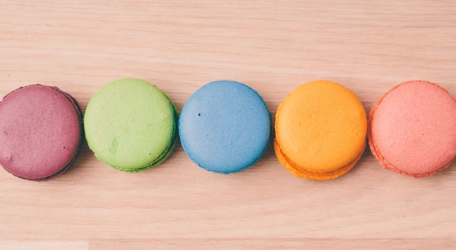
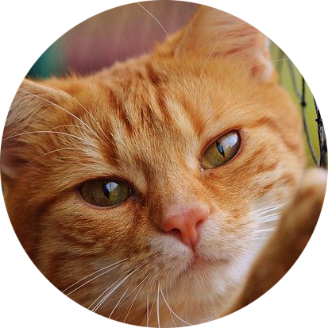

<!DOCTYPE html>
<html lang="ja" prefix="og: http://ogp.me/ns# fb:http://ogp.me/ns/fb#">
    <head>
        <meta property="og:title" content="PROFILE へんてコりん official website">
        <meta property="og:type" content="website">
        <meta property="og:description" content="へんてコりんのへんてこなメンバーのプロフィール。">
        <meta property="og:url" content="https://asukas-ueda.github.io/bandofficial/.">
        <meta property="og:site_name" content="へんてコりん official website">
        <meta property="og:image" content="https://asukas-ueda.github.io/bandofficial/img/hentekorin_ogp.png">
        <meta charset="utf-8"/>
        <meta http-equiv="X-UA-Compatible" content="IE=edge">
        <meta name="viewport" content="width=device-width, initial-scale=1.0">
        <title>へんてコりん official website</title>
        <link rel="stylesheet" href="css/style2.css">
        <link rel="stylesheet" href="css/responsive.css">
        <link rel="stylesheet" href="https://maxcdn.bootstrapcdn.com/font-awesome/4.5.0/css/font-awesome.min.css">
    </head>

    <body>
        <header class="pfix">
            <h1>
                <a href="index.html"><picture>
                    <source media="(max-width:480px)" srcset="img/hentekorin2.png">
                    
                </picture></a>
            </h1>

            <nav class="nav" id="nav_f">
                <ul>
                    <li><a href="news.html">NEWS</a></li>
                    <li><a href="live.html">LIVE</a></li>
                    <li class="now-page"><a href="profile.html">PLOFILE</a></li>
                    <li><a href="discography.html">DISCOGRAPHY</a></li>
                    <li><a href="contact.html">CONTACT</a></li>    
                </ul>
            </nav>
            <div id="target">
                <div class="target_inner">
                　　 <span class="target_inner_line target_inner_1" id="line1"></span>
                　　　<span class="target_inner_line target_inner_2" id="line2"></span>
                　　　<span class="target_inner_line target_inner_3" id="line3"></span>
                </div>
            </div>

            <script src="js/jquery-3.5.0.min.js"></script>
            <script type="text/javascript" src="js/drawer.js"></script>
        </header>
        
        <main>
            <section class="wrapper">
                <h1>PLOFILE</h1>
            </section>

            <section class="profile">
                <div class="group">
                
                <p>へんてコりんは、クマ坊（ボーカル/ギター）、ぽっちゃん（ギター）、針の山（ベース）、ほねっこ（ドラム）、節子さん（キーボード/コーラス）で結成された。</p>
                <p>動画投稿サイト YouTubeに動画を投稿して活動する、ポップでへんてこなバンドである。</p>
                <p>高校時代の軽音部で結成され、今年で結成して9年目となる。</p>
                <p>2015年にメジャーデビュー。</p>
                </div>
                
                <div class="sub_wrapper">
                    <h1>MEMBER</h1>
                </div>

                <section class="member">
                <div class="individual">
                    <div class="icon">
                        
                    </div>
                    <div class="name">
                        <h2>クマ坊</h2>
                        <h3>Bo./Gt.</h3>
                        <p>見た目からは想像できないハイトーンボイスの持ち主。</p>
                        <p>作詞担当。</p>
                    </div>
                </div>

                <div class="individual">
                    <div class="icon">
                        
                    </div>
                    <div class="name">
                        <h2>ぽっちゃん</h2>
                        <h3>Gt.</h3>
                        <p>ギターより首の動きの方が気になるリードギター。</p>
                        <p>テンションが上がってくると急に飛び始める。</p>
                    </div>
                </div>

                <div class="individual">
                    <div class="icon">
                        
                    </div>
                    <div class="name">
                        <h2>針の山</h2>
                        <h3>Ba.</h3>
                        <p>触れると怪我しちゃうベーシスト。</p>
                        <p>可愛い見た目に反して口は悪いが、お世話焼き。</p>
                    </div>
                </div>

                <div class="individual">
                    <div class="icon">
                        
                    </div>
                    <div class="name">
                        <h2>骨っこ</h2>
                        <h3>Dr.</h3>
                        <p>スティックを持つとアーティスト顔に変身する。</p>
                        <p>モテたい。</p>
                    </div>
                </div>

                <div class="individual">
                    <div class="icon">
                        
                    </div>
                    <div class="name">
                        <h2>節子さん</h2>
                        <h3>Key./Cho.</h3>
                        <p>クールなみんなのお姉さん。</p>
                        <p>作曲担当。</p>
                        <p>節子さんがいないとバンドがまとまらない。</p>
                    </div>
                </div>
                </section>
                
            </section>
        </main>

        <footer>
            <p>hentekorin official</p>
            <div class="snsbtn clearfix">
               <a href="#"></a>
               <a href="#"></a>
               <a href="#"></a>
            </div>
        </footer>
    </body>
</html>